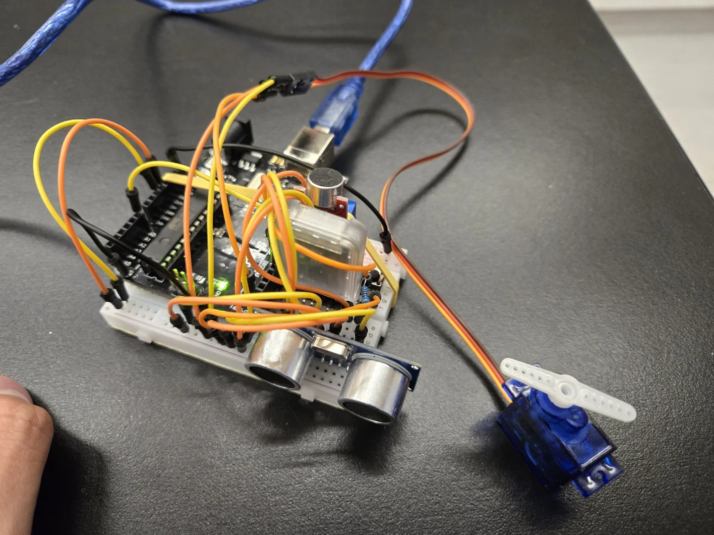

Hardware & fabrication
Raspberry Pi Arcade Cabinet
A two-player cabinet I laser-cut, wired, and configured for school events.
Electrical Engineering Co-op · University of Waterloo
Hardware & fabrication
A two-player cabinet I laser-cut, wired, and configured for school events.


Sensors & embedded systems
An Arduino gas-sensor array that explored how to tell food samples apart.


Motor control & mechanical design
Independent motor control, a 3D-printed hull, and a bathtub test.

Home automation
An Arduino prototype that senses activity and mechanically toggles a switch.

Web development & entrepreneurship
A website and intake system for a youth-run home maintenance service.
I’m pursuing a Bachelor of Applied Science in Electrical Engineering at the University of Waterloo. My projects take me from breadboarding and programming to CAD, fabrication, and testing.